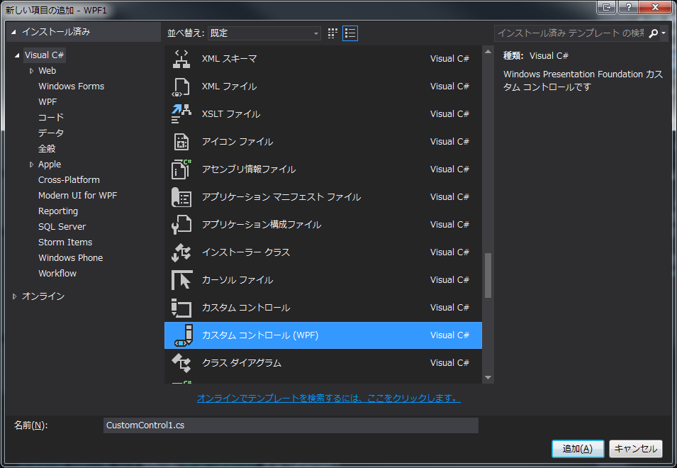

Why?
カスタムコントロールの練習のためです。
ちょっと開発中のアプリで自前で可変サイズのグリッドが必要になったのですが、XamlでGridをゴリゴリ用意するなら、カスタムコントロールのがパフォーマンスは良いだろう、という判断です。
WinFormsの時は、OnPaint を駆使して、ListView, TextBox, ComboBox をカスタマイズしていました。
Win32APIと(隠蔽されていたとはいえ)密接に関わっているため、Windowsの深い知識が必要でしたが、楽しくもありました。
あれはあれで、Windows Developerとしての腕の見せ所でしたでしょう。
Introduction
今回の仕様は
- UIからグリッドのサイズを変更できる
- UIから線のサイズを変更できる
の2点です。
なので、MVVMを使っていきます。
サンプルソースは下記になります。
OnRender
WinFormsでは Control.OnPaint メソッドをオーバーライドすることで、コントロールに独自の描画を実施することができます。
が、WPFの場合はControlTemplateがあるので、そういうことはしないでしょう。
では、どういうときに自前で描画するか、というと、パフォーマンスの追求ではないでしょうか?
例えば、数百数千の円を表示するようなグラフのようなコントロールの場合、Ellipse を大量に配置するのはものすごく重くなります。
Shapeオブジェクトは重いのです。ましてや、そのような用途の場合、全オブジェクトに依存関係があることは当然でしょう。さらに重いこと受けあいです。
参考
ですので、そもそもレイアウト処理が発生しない自前描画が最速になることは当然です。
無論、描画する必要の無い場所は描画しない、というのが原則ですが。
脇道にそれましたが、WPFの場合、WinFormsのOnPaintと対となるのは、System.Windows.UIElement.OnRender メソッドになります。
メソッドの名前も意味からして似ていますが、引数も似たようなものです。
引数の System.Windows.Media.DrawingContext は描画系のメソッドを持っています。WinFormsの PaintEventArgs.Graphics と同じです。
なので、このメソッドで描画すれば、そのままコントロールに独自描画できます。簡単!!
仕事で、大量の円や自由曲線、矩形を縦横数千ピクセルの画像上にWinFormsで描画してきた経験から、これをWPFでUIElementで実現しようとしたら死ぬ、というのはすぐにわかります。
というか、アメリカの子会社がUWPですが、これをやってました。無論、お察しのパフォーマンスでした。
特殊なOnPaintをふんだんに駆使したコントロールを移植する場合は、WPFでも自前で描画した方が楽なのかもしれません。
コード解説
カスタムコントロールはプロジェクトに新しい項目の追加から、カスタムコントロール (WPF) を追加するだけです。
 サンプルソースのGridControlの中身です。
まずは依存関係です。
{kind=link}
1 | public static readonly DependencyProperty CellStatesProperty = |
CellStates が bool の2次元配列ですが、これは自分の本来の目的のためなので、特に意味はありません。
必要なのは任意のグリッドを表現しているだけです。
BorderSize はグリッドの線の幅です。Controlには BorderThickness プロパティがありますが、これは使いません。
次は、OnRenderの描画処理です。
1 | protected override void OnRender(DrawingContext drawingContext) |
Xamlはこんな感じです。
1 | <Grid> |
カスタムのGridコントロールの外側に赤い枠があります。
これはカスタムコントロールが正しい位置に描画されているか、というチェックに使います。
ソース中のコメントが割と丁寧なので説明は不要ですが、ポイントは borderGap 変数です。
これがないと描画したとき結果がおかしくなります。ためしに、この変数に0を設定して実行して見てください。
{kind=link}
GridControlの外に設置した Border を浸食しています。
左上の0,0から描画したのにこうなるわけは、コメントにあるとおり、Penで描画する際、指定した座標はペンの幅のどこに来るか、ということを考えればわかると思います。
幅が太い場合は顕著ですが、幅の中心が、指定した位置に当たるので、ペン幅の半分だけはみ出る、という訳です。
正しく実行するとこうなります。
{kind=link}